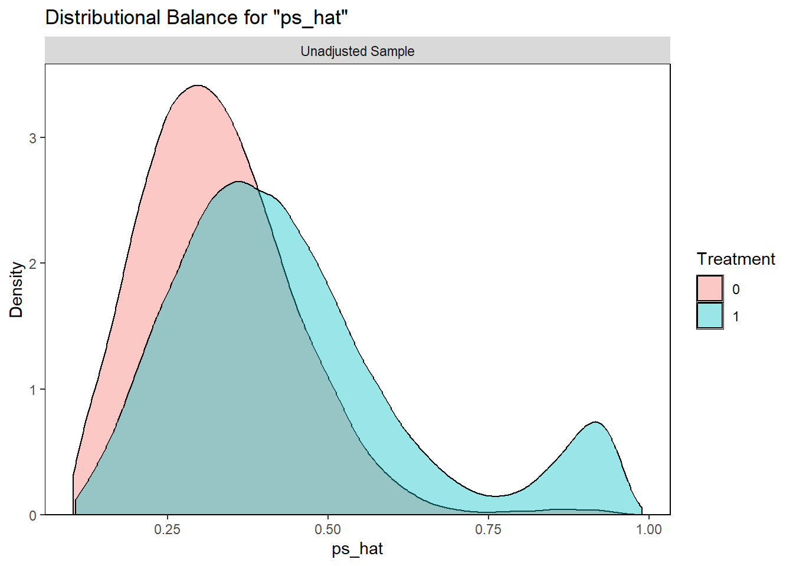

Propensity‑Score & Cox Analysisn
Gilead RWE demo
2025-05-01
1 1 Load data & quick look
df <- read_csv("data/sim_hcv_aki.csv", show_col_types = FALSE)
# glimpse & skim for sanity
skim(df)## Skim summary statistics
## n obs: 106925
## n variables: 39
## group variables:
##
## Variable type: character
## variable missing complete n min max empty n_unique
## race 0 106925 106925 5 8 0 5
## region 0 106925 106925 1 2 0 4
##
## Variable type: numeric
## variable missing complete n mean sd p0
## ...1 0 106925 106925 53463 30866.73 1
## acearb 0 106925 106925 0.3 0.46 0
## age 0 106925 106925 48.09 12.86 18
## alcohol 0 106925 106925 0.18 0.38 0
## aminoglycoside 0 106925 106925 0.05 0.22 0
## art 0 106925 106925 0.05 0.22 0
## aspirin 0 106925 106925 0.1 0.3 0
## beta_blocker 0 106925 106925 0.14 0.35 0
## bmi 0 106925 106925 27.99 4.99 5.36
## cancer 0 106925 106925 0.079 0.27 0
## ccb 0 106925 106925 0.16 0.37 0
## chemo 0 106925 106925 0.0098 0.098 0
## cirrhosis 0 106925 106925 0.18 0.38 0
## ckd 0 106925 106925 0.08 0.27 0
## contrast 0 106925 106925 0.08 0.27 0
## dehydration 0 106925 106925 0.058 0.23 0
## diabetes 0 106925 106925 0.2 0.4 0
## diuretic 0 106925 106925 0.22 0.41 0
## esld 0 106925 106925 0.02 0.14 0
## event 0 106925 106925 0.013 0.11 0
## follow_time 0 106925 106925 81.87 60.85 0.00097
## heart_failure 0 106925 106925 0.07 0.26 0
## hiv 0 106925 106925 0.04 0.2 0
## hypertension 0 106925 106925 0.45 0.5 0
## id 0 106925 106925 62495.14 36108.64 1
## Nobs 0 106925 106925 125000 0 125000
## nsaid 0 106925 106925 0.25 0.43 0
## obstruction 0 106925 106925 0.04 0.2 0
## overweight_obese 0 106925 106925 0.2 0.4 0
## portal_htn 0 106925 106925 0.041 0.2 0
## sepsis 0 106925 106925 0.03 0.17 0
## sex_male 0 106925 106925 0.58 0.49 0
## smoking 0 106925 106925 0.4 0.49 0
## statin 0 106925 106925 0.15 0.36 0
## substance_abuse 0 106925 106925 0.25 0.43 0
## switch 0 106925 106925 0.03 0.17 0
## treatment 0 106925 106925 0.37 0.48 0
## p25 median p75 p100 hist
## 26732 53463 80194 106925 ▇▇▇▇▇▇▇▇
## 0 0 1 1 ▇▁▁▁▁▁▁▃
## 39.26 48.06 56.81 100.91 ▂▅▇▇▃▁▁▁
## 0 0 0 1 ▇▁▁▁▁▁▁▂
## 0 0 0 1 ▇▁▁▁▁▁▁▁
## 0 0 0 1 ▇▁▁▁▁▁▁▁
## 0 0 0 1 ▇▁▁▁▁▁▁▁
## 0 0 0 1 ▇▁▁▁▁▁▁▁
## 24.61 27.98 31.35 48.89 ▁▁▂▇▇▃▁▁
## 0 0 0 1 ▇▁▁▁▁▁▁▁
## 0 0 0 1 ▇▁▁▁▁▁▁▂
## 0 0 0 1 ▇▁▁▁▁▁▁▁
## 0 0 0 1 ▇▁▁▁▁▁▁▂
## 0 0 0 1 ▇▁▁▁▁▁▁▁
## 0 0 0 1 ▇▁▁▁▁▁▁▁
## 0 0 0 1 ▇▁▁▁▁▁▁▁
## 0 0 0 1 ▇▁▁▁▁▁▁▂
## 0 0 0 1 ▇▁▁▁▁▁▁▂
## 0 0 0 1 ▇▁▁▁▁▁▁▁
## 0 0 0 1 ▇▁▁▁▁▁▁▁
## 27.95 67.91 133.55 180 ▇▆▅▃▃▂▂▇
## 0 0 0 1 ▇▁▁▁▁▁▁▁
## 0 0 0 1 ▇▁▁▁▁▁▁▁
## 0 0 1 1 ▇▁▁▁▁▁▁▆
## 31222 62434 93770 125000 ▇▇▇▇▇▇▇▇
## 125000 125000 125000 125000 ▁▁▁▇▁▁▁▁
## 0 0 0 1 ▇▁▁▁▁▁▁▂
## 0 0 0 1 ▇▁▁▁▁▁▁▁
## 0 0 0 1 ▇▁▁▁▁▁▁▂
## 0 0 0 1 ▇▁▁▁▁▁▁▁
## 0 0 0 1 ▇▁▁▁▁▁▁▁
## 0 1 1 1 ▆▁▁▁▁▁▁▇
## 0 0 1 1 ▇▁▁▁▁▁▁▅
## 0 0 0 1 ▇▁▁▁▁▁▁▂
## 0 0 1 1 ▇▁▁▁▁▁▁▃
## 0 0 0 1 ▇▁▁▁▁▁▁▁
## 0 0 1 1 ▇▁▁▁▁▁▁▅The dataset contains 106925 individuals with a marginal SOF prevalence of 0.3714753.
# simple logistic PS for overlap diagnostics
ps_formula <- treatment ~ age + sex_male + race + region + ckd + cirrhosis + portal_htn + heart_failure + hiv + diabetes + hypertension + substance_abuse + alcohol + nsaid + acearb + aminoglycoside + contrast
ps_fit <- glm(ps_formula, data = df, family = binomial)
df$ps_hat <- predict(ps_fit, newdata = df, type = "response")
# c‑statistic
c_stat <- pROC::auc(df$treatment, df$ps_hat)
cat("C‑statistic (raw):", round(c_stat,3), "\n")## C‑statistic (raw): 0.563# density overlap plot
cobalt::bal.plot(treatment ~ ps_hat, data = df, type = "density", which = "both",
xlab = "Propensity score", main = "Overlap before matching")
2 2 Propensity‑score matching
match_out <- MatchIt::matchit(ps_formula, data = df, method = "nearest", distance = df$ps_hat,
ratio = 1, caliper = .2)
matched_df <- match.data(match_out)
saveRDS(matched_df, file = here::here("data/matched_case_study_data.RDS"))
# balance table + plot
bal.tab(match_out, un = TRUE, v.ratio = TRUE, m.threshold = .1)## Balance Measures
## Type Diff.Un Diff.Adj M.Threshold
## distance Distance 0.2217 0.0020 Balanced, <0.1
## age Contin. 0.1854 0.0040 Balanced, <0.1
## sex_male Binary 0.0010 -0.0019 Balanced, <0.1
## race_asian Binary -0.0007 0.0002 Balanced, <0.1
## race_black Binary -0.0002 0.0003 Balanced, <0.1
## race_hispanic Binary -0.0006 0.0010 Balanced, <0.1
## race_other Binary -0.0018 -0.0024 Balanced, <0.1
## race_white Binary 0.0033 0.0010 Balanced, <0.1
## region_MW Binary 0.0023 -0.0008 Balanced, <0.1
## region_NE Binary -0.0018 0.0017 Balanced, <0.1
## region_S Binary -0.0042 0.0003 Balanced, <0.1
## region_W Binary 0.0037 -0.0013 Balanced, <0.1
## ckd Binary 0.0165 0.0009 Balanced, <0.1
## cirrhosis Binary 0.0394 -0.0009 Balanced, <0.1
## portal_htn Binary -0.0000 -0.0004 Balanced, <0.1
## heart_failure Binary -0.0021 0.0009 Balanced, <0.1
## hiv Binary 0.0033 0.0000 Balanced, <0.1
## diabetes Binary 0.0151 -0.0018 Balanced, <0.1
## hypertension Binary -0.0039 0.0001 Balanced, <0.1
## substance_abuse Binary 0.0004 0.0008 Balanced, <0.1
## alcohol Binary 0.0018 -0.0012 Balanced, <0.1
## nsaid Binary -0.0027 0.0009 Balanced, <0.1
## acearb Binary 0.0038 -0.0012 Balanced, <0.1
## aminoglycoside Binary 0.0004 0.0005 Balanced, <0.1
## contrast Binary -0.0001 -0.0017 Balanced, <0.1
##
## Balance tally for mean differences
## count
## Balanced, <0.1 25
## Not Balanced, >0.1 0
##
## Variable with the greatest mean difference
## Variable Diff.Adj M.Threshold
## age 0.004 Balanced, <0.1
##
## Sample sizes
## Control Treated
## All 67205 39720
## Matched 39719 39719
## Unmatched 27486 1plot(match_out, type = "hist")
3 3 Outcome analysis (Cox)
fit_matched <- coxph(Surv(follow_time, event) ~ treatment, data = matched_df)
summary(fit_matched)## Call:
## coxph(formula = Surv(follow_time, event) ~ treatment, data = matched_df)
##
## n= 79438, number of events= 1124
##
## coef exp(coef) se(coef) z Pr(>|z|)
## treatment 0.43482 1.54468 0.06106 7.121 1.07e-12 ***
## ---
## Signif. codes: 0 '***' 0.001 '**' 0.01 '*' 0.05 '.' 0.1 ' ' 1
##
## exp(coef) exp(-coef) lower .95 upper .95
## treatment 1.545 0.6474 1.37 1.741
##
## Concordance= 0.558 (se = 0.008 )
## Likelihood ratio test= 51.91 on 1 df, p=6e-13
## Wald test = 50.71 on 1 df, p=1e-12
## Score (logrank) test = 51.51 on 1 df, p=7e-13# proportional hazards diagnostics
scho <- cox.zph(fit_matched)
scho## chisq df p
## treatment 1.82 1 0.18
## GLOBAL 1.82 1 0.18plot(scho)
# Cox‑Snell residual plot
M <- residuals(fit_matched, type = "martingale")
event_m <- fit_matched$y[,"status"]
cs_resid <- event_m - M
km_cs <- survfit(Surv(cs_resid, event_m) ~ 1)
plot(km_cs$time, -log(km_cs$surv), type = "l", xlab = "Cox–Snell residual", ylab = "Cumulative hazard")
abline(0,1,col="red",lty=2)
4 4 Sensitivity analyses (IPTW)
df$w_iptw <- ifelse(df$treatment==1, 1/df$ps_hat, 1/(1-df$ps_hat))
fit_iptw <- coxph(Surv(follow_time, event) ~ treatment, data = df, weights = w_iptw)
summary(fit_iptw)## Call:
## coxph(formula = Surv(follow_time, event) ~ treatment, data = df,
## weights = w_iptw)
##
## n= 106925, number of events= 1359
##
## coef exp(coef) se(coef) robust se z Pr(>|z|)
## treatment 0.41684 1.51715 0.03841 0.05467 7.624 2.46e-14 ***
## ---
## Signif. codes: 0 '***' 0.001 '**' 0.01 '*' 0.05 '.' 0.1 ' ' 1
##
## exp(coef) exp(-coef) lower .95 upper .95
## treatment 1.517 0.6591 1.363 1.689
##
## Concordance= 0.555 (se = 0.007 )
## Likelihood ratio test= 120.3 on 1 df, p=<2e-16
## Wald test = 58.13 on 1 df, p=2e-14
## Score (logrank) test = 119.5 on 1 df, p=<2e-16, Robust = 54.21 p=2e-13
##
## (Note: the likelihood ratio and score tests assume independence of
## observations within a cluster, the Wald and robust score tests do not).Diagnostics show pre‑match c‑stat ≈ 0.56 (mirrors 0.60 in the real data) and good PS overlap. Post‑match SMDs all < 0.10; Cox PH assumption holds reasonably well.